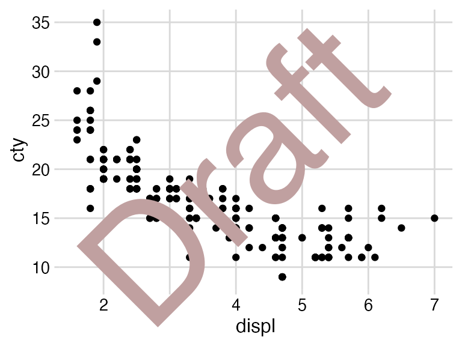
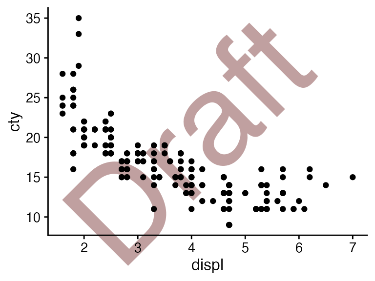
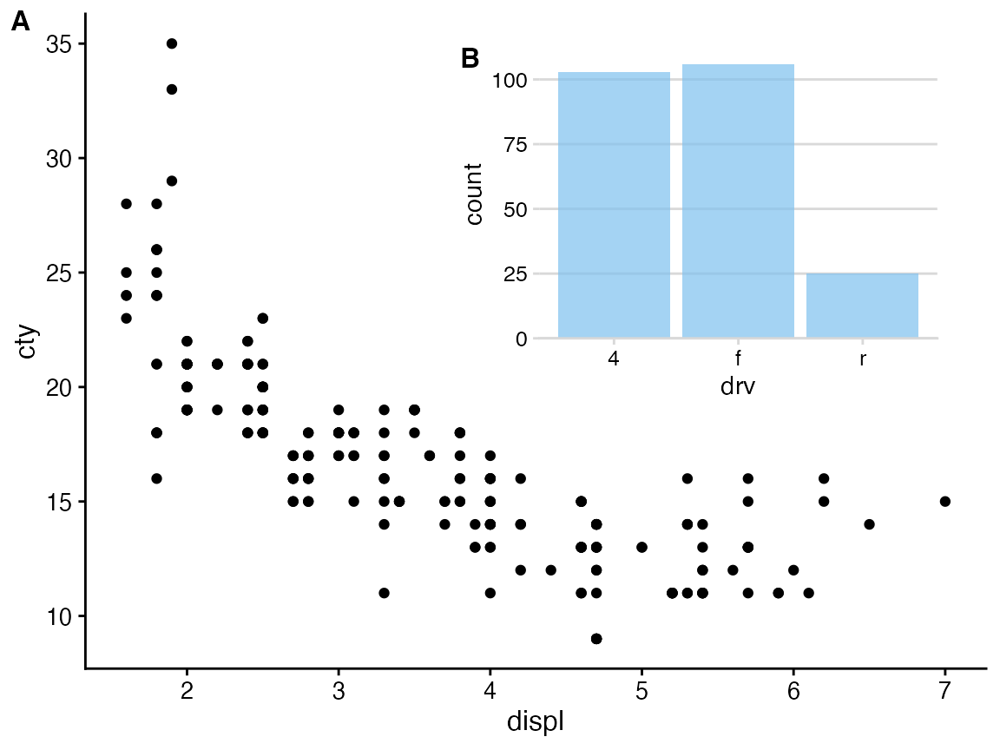

Drawing with and on plots
Claus O. Wilke
2019-06-09
Source:vignettes/drawing_with_on_plots.Rmd
drawing_with_on_plots.RmdThe cowplot package provides functions to draw with and on plots. These functions enable us to take plots and add arbitrary annotations or backgrounds, to place plots inside of other plots, to arrange plots in more complicated layouts, or to combine plots from different graphic systems (ggplot2, grid, lattice, base). This functionality is build on top of ggplot2, i.e., the resulting plots are ggplot2 objects and they can be modified, extended, and outputted just like regular ggplot2 plots.
Basic annotations
We start with some simple annotations, such as labels or watermarks. Let’s begin with a basic plot of the mpg dataset.
library(ggplot2)
library(cowplot)
p <- ggplot(mpg, aes(displ, cty)) +
geom_point() +
theme_minimal_grid(12)
p
Next we’re going to watermark this plot with the word “Draft”. To do so, we wrap the plot into a drawing environment via the ggdraw() call, and then add annotations via various draw_*() functions.

What ggdraw(p) does is it captures a snapshot of the plot, so that the plot effectively turns into an image, and then it draws that image into a new ggplot2 canvas without visible axes or background grid. The draw_* functions are simply wrappers around regular geoms. So, in the above example we could have used geom_text() instead of draw_label().
ggdraw(p) +
geom_text(
data = data.frame(x = 0.5, y = 0.5, label = "Draft"),
aes(x, y, label = label),
hjust = 0.5, vjust = 0.5, angle = 45, size = 100/.pt,
color = "#C0A0A0",
inherit.aes = FALSE
)
However, notice how much more verbose the call to geom_text() is. Also, geom_text() interprets font sizes in mm, so we need to divide by .pt if we want to specify font sizes in the more conventional point metric. By contrast, draw_label() performs this conversion for us, so we can specify font sizes directly in points.
Because ggdraw() is built on top of ggplot2, we can complete..
ggdraw(p) +
draw_label("Draft", color = "#C0A0A0", size = 100, angle = 45) +
theme(
plot.background = element_rect(fill = "cornsilk", color = NA)
)
We can also save the annotated plots in the standard way via ggsave().
draft <- ggdraw(p) +
draw_label("Draft", color = "#C0A0A0", size = 100, angle = 45)
ggsave("draft.pdf", draft)(However, the cowplot package provides an alternative to ggsave(), the function save_plot(), which makes it easier to save plots with appropriate sizing, in particular when making compound plots. See the documentation of save_plot() for details.)
Frequently, we may want to have the annotations underneath the plot rather than on top of it. We can achieve this effect by first setting up an empty drawing layer with ggdraw(), then adding the label, and then adding the plot with draw_plot().

This requires that the plot has a transparent background, and all cowplot themes meet this requirement. By contrast, this is not necessarily the case for ggplot2 themes. For example, if we change the theme of the plot to theme_classic() the underlying label is hidden by the theme’s white background.
ggdraw() +
draw_label("Draft", color = "#C0A0A0", size = 100, angle = 45) +
draw_plot(
p + theme_classic()
)
The cowplot theme theme_half_open() does not have this limitation.
ggdraw() +
draw_label("Draft", color = "#C0A0A0", size = 100, angle = 45) +
draw_plot(
p + theme_half_open(12)
)
Making inset plots
The draw_plot() function also allows us to place plots at arbitrary locations and at arbitrary sizes onto the canvas. This is useful for combining subplots into a layout that is not a simple grid, e.g. with an inset plotted inside a larger graph.
inset <- ggplot(mpg, aes(drv)) +
geom_bar(fill = "skyblue2", alpha = 0.7) +
scale_y_continuous(expand = expand_scale(mult = c(0, 0.05))) +
theme_minimal_hgrid(11)
ggdraw(p + theme_half_open(12)) +
draw_plot(inset, .45, .45, .5, .5) +
draw_plot_label(
c("A", "B"),
c(0, 0.45),
c(1, 0.95),
size = 12
)
This feature is not limited to ggplot2 plots. It works with base graphics as well.
inset <- ~{
counts <- table(mpg$drv)
par(
cex = 0.8,
mar = c(3, 3, 1, 1),
mgp = c(2, 1, 0)
)
barplot(counts, xlab = "drv", ylab = "count")
}
ggdraw(p + theme_half_open(12)) +
draw_plot(inset, .45, .45, .5, .5) +
draw_plot_label(
c("A", "B"),
c(0, 0.45),
c(1, 0.95),
size = 12
)
Absolute positioning
By default, the coordinate system used by ggdraw() uses relative coordinates running from 0 to 1 for both x and y. Sometimes, however, we need to be able to place graphical elements at absolute units, e.g. exactly 1 inch from the left border. We can do so via the grid graphic system, which is supported through the draw_grob() function. For example, the following code generates a blue square of 1 inch width and height that is located exactly 1 inch from the left and 1 inch from the top border of the plot area.
library(grid)
rect <- rectGrob(
x = unit(1, "in"),
y = unit(1, "npc") - unit(1, "in"),
width = unit(1, "in"),
height = unit(1, "in"),
hjust = 0, vjust = 1,
gp = gpar(fill = "skyblue2", alpha = 0.5)
)
ggdraw(p) +
draw_grob(rect)If we regenerate the plot in a different size, the blue square remains at the same absolute position and retains its absolute size.

Combining plots and images
The drawing layer also supports images, through the function draw_image(). This function, which requires the magick package to be installed, can take images in many different formats and combine them with plots. For example, we can use an image as a plot background:
library(magick)
library(dplyr)
library(forcats)
img <- system.file("extdata", "cow.jpg", package = "cowplot") %>%
image_read() %>%
image_resize("570x380") %>%
image_colorize(35, "white")
p <- PASWR::Cows %>%
filter(breed != "Canadian") %>%
mutate(breed = fct_reorder(breed, butterfat)) %>%
ggplot(aes(butterfat, fill = breed)) +
geom_density(alpha = 0.7) +
scale_fill_grey() +
coord_cartesian(expand = FALSE) +
theme_minimal_hgrid(11, color = "grey30")
ggdraw() +
draw_image(img) +
draw_plot(p)
We can also add an image as a logo onto a plot.
logo_file <- system.file("extdata", "logo.png", package = "cowplot")
ggdraw() +
draw_plot(p) +
draw_image(logo_file, x = 1, hjust = 1, width = 0.13, height = 0.2)